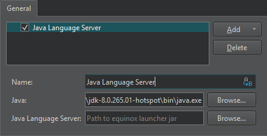

Add a Java language server
To add a Java language server for developing Android applications:
- Go to Preferences > Language Client > Add > Java Language Server to add a Java language server.

- In Name, enter a name for the language server. Select
 (Variables) to use a variable for the server name.
(Variables) to use a variable for the server name. - In Java, enter the path to the Java executable.
- In Java Language Server, enter the path to the Java language server
.jarfile. You can download the Java language server from Eclipse Downloads.
See also How To: Manage Language Servers, Use Qt Creator variables, and Language Servers.